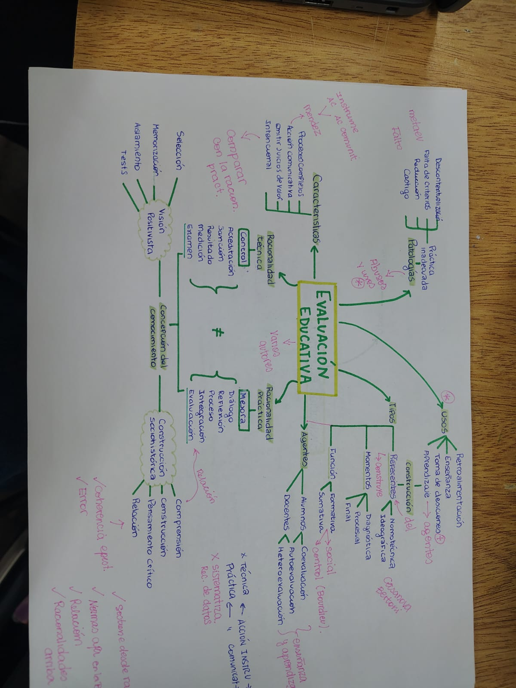
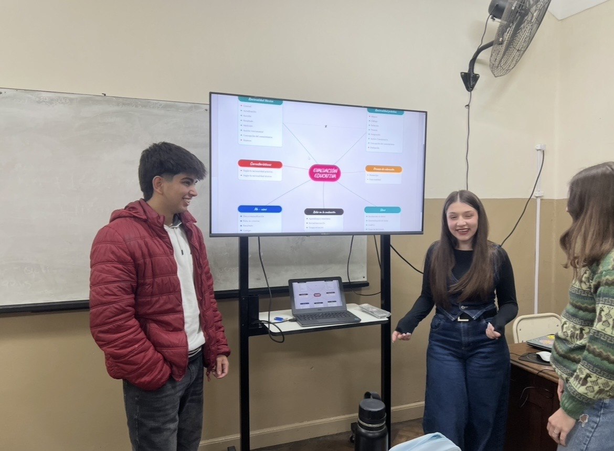

Desarmando la Evaluación
Un proceso de reconstrucción personal y grupal
Autor
Ramiro Batibulli
Año
3º Año · 2026
Por qué armé este portafolio
Este portafolio reúne el proceso que atravesé para construir un mapa conceptual sobre la evaluación educativa, a partir de la lectura y puesta en relación de ocho textos centrales.
Lo armo para poder mirar hacia atrás y reconstruir no solo el mapa final, sino las decisiones, dudas y errores que fui teniendo en el camino — muchos de ellos tan formativos como el resultado mismo.
"A partir de la segunda etapa me sumé a un grupo de trabajo con dos compañeras, así que buena parte de este recorrido lo pensamos y construimos juntos."
A lo largo de las entradas que siguen vas a encontrar los hitos que marcaron ese recorrido, con las imágenes del proceso, el motivo por el cual los elegimos y lo que aprendimos en cada etapa.
Recorrido del portafolio
1. El primer boceto digital


Por qué elijo este momento
Fue el primer intento de plasmar la idea de que todo en la evaluación educativa se organiza en torno a un núcleo (características, usos, intención, proceso) con relaciones reticulares, siguiendo la lógica de Novak.
Lo que aprendí
Al revisar esta versión noté un error de jerarquía: agrupaba criterios de clasificación distintos ("momento", "función", "referente") sin marcar que eran categorías separadas. Esto me obligó a preguntarme, para cada rama, qué estaba clasificando y desde qué criterio.
2. Trabajo grupal y vuelta al papel

El cambio de dinámica
Sumarnos en equipo cambió la forma de trabajar: ya no alcanzaba con que a uno de nosotros algo le cerrara, había que poder explicarlo y sostenerlo frente a otras dos miradas. Discutir entre los tres la distinción entre racionalidad técnica y práctica nos obligó a ponernos de acuerdo en un lenguaje común.
Ajuste conceptual
En este boceto la profesora marcó un error clave: "racionalidad práctica" no es una noción kantiana, sino que viene de Habermas. Fue uno de los aprendizajes más importantes de todo el proceso.
3. La segunda devolución

Criterios de evaluación
La profesora realizó un chequeo minucioso: coherencia, relación, error, normas y racionalidades. Fue la primera vez que vimos el mapa evaluado con criterios explícitos y no solo corregido a mano alzada.
Ahí quedó marcada la distinción entre "acción instrumental" y "acción comunicativa", que en nuestra versión anterior estaba mal etiquetada.
4. El mapa final interactivo
Mapa Interactivo
Abrir recurso externoLógica de Novak
Entendimos que el mapa debe estar armado con conceptos puros conectados por palabras de enlace para formar proposiciones sólidas. Decidimos dejar los nombres de los autores para el resumen aparte para no fragmentar la estructura visual del mapa.
5. Preparación de la exposición oral

De la vista a la palabra
Armar el guion nos obligó a decidir un orden de recorrido. Noté algo clave: la lógica de lectura de un mapa (que es reticular) es muy distinta a la lógica de una exposición oral (que es secuencial). Tuvimos que elegir un camino posible y repartirnos las partes.
Reflexión final
"Mirando el proceso completo, me queda claro que un mapa conceptual no se arma de una sola vez: cada versión resolvió un problema distinto y dejó abierta una pregunta para la siguiente."
"Sumarme a trabajar en grupo fue parte central de este aprendizaje: tuve que aprender a explicar en voz alta lo que hasta entonces pensaba solo para mí, y a sostener —o ceder— una idea frente a otras miradas."
"Me queda la pregunta abierta: ¿cómo se sostiene esta lógica en la práctica docente real? ¿Cómo se ve una devolución pensada según el proceso y no solo según el resultado final?"
Ramiro Batibulli · 2026